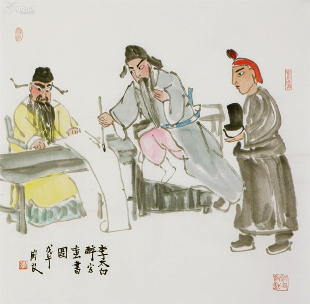
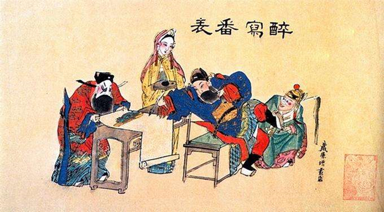

历史溯源
高抬戏剧目《李白醉写》画面取材于广为流传的民间故事《太白醉写》。讲的是唐明皇与杨贵纪在御苑中歌舞饮酒，观赏牡丹，为了增添这场盛宴的文化韵味，唐明皇突发奇想，决定邀请当朝最著名的诗人——李白，前来即兴创作一首诗歌，以赞美这满园的春色与眼前的美好景致。
李白步入御前，已有几分酒意，面颊微红，眼神中闪烁着才华横溢的光芒。他环顾四周，只见牡丹盛开，乐舞翩翩，心中豪情顿生，却也不失幽默与机智。见高力士立于一旁，李白心生一计，决定借此机会戏弄一番这位平日里权倾一时的宦官，强迫他拂纸、磨墨、脱靴。高力士面色铁青，但碍于皇命难违，又恐触怒龙颜，只得强忍怒火，一一照做。他先是小心翼翼地拂平宣纸，再细心研磨墨汁，最后，极不情愿地跪在李白脚下，为他脱下靴子。这一幕，让在场的所有人都瞠目结舌，却也暗暗佩服李白的才情与胆识。
而李白，则在得到高力士的“服侍”后，更加豪情万丈，他提笔蘸墨，笔尖轻触纸面，随即行云流水般书写起来。不一会儿，一首歌颂盛世的诗歌便跃然纸上，其词句华美，意境深远，令唐明皇与杨贵妃赞不绝口，整个御苑再次沉浸在一片赞叹与喜悦之中。
高抬戏剧目《李白醉写》以此为蓝本，通过精湛的演技与华丽的高抬桌上布景，将这一段脍炙人口的民间故事生动再现，让观众在欣赏精彩表演的同时，也能感受到李白那超凡脱俗的才情与不羁的个性，以及古代文人墨客对于自由与真我的追求。
高抬戏剧目《李白醉写》定格李白趁醉酒写诗让高力士为其脱靴和李国忠为其研墨的画面，展现了李白的放荡不羁和一身傲骨。
演员及站位
在《李白醉写》这一经典民间艺术演绎中，李白、高力士和杨国忠三位角色，通过巧妙的站位布局，将一段关于才华、权力与嫉妒的故事娓娓道来。
李白居中而上，仿佛站在云端之巅，他的姿态不羁而洒脱，仿佛随时都能挥毫泼墨，书写出流传千古的佳句。他的站位，不仅象征着他作为一代诗仙的崇高地位，更暗含了他此刻受到唐明皇赏识与器重的荣耀与自豪。李白的眼神中闪烁着智慧与不羁的光芒，仿佛整个世界都在他的笔下被赋予了生命与色彩。
而高力士与杨国忠，则站于李白脚下的两侧，他们的站位不仅是对李白地位的衬托，更是对他们此刻身份的准确描绘。高力士，作为宫廷中的权臣，虽然位高权重，但在李白的才华与唐明皇的纵容面前，他也不得不屈居人下，服侍李白。他站在李白的左侧，眼神中既有对李白的敬畏，也有一丝不易察觉的嫉妒与无奈。
杨国忠，这位在剧中被描绘为嫉妒心重、善于权谋的角色，他站在李白的右侧，与高力士形成了一种微妙的平衡。他的站位，不仅表明了他此刻在宫廷中的地位，也暗示了他内心对李白才华的嫉妒与对权力的渴望。他双手背在身后，不时地而望向远方，仿佛在心中盘算着如何能够削弱李白的地位，或是如何能够利用李白的才华来为自己谋取更多的权力与利益。
这样的站位设计，不仅直观地展现了李白、高力士与杨国忠之间的地位差异与人物关系，更深刻地传达了剧情的走向与人物内心的情感变化。观众在欣赏这场演出的同时，也能深刻感受到《李白醉写》所蕴含的才华、权力与嫉妒的交织与碰撞。
动作神态
在高抬戏《李白醉写》的高抬桌上，演员们的动作与神态不仅生动展现了角色的性格特征，更将观众带入了一个充满诗意与权谋交织的唐代世界。剧中，李白的动作神态尤为引人注目，他那不羁的才情与放纵的生活态度，通过细腻的动作与神态刻画得淋漓尽致。
动作一，李白右手拿笔，作写字姿势，左手则悠闲地持着酒杯，仿佛整个世界都在他的笔下与酒中。他的神情专注而洒脱，笔尖在纸上跳跃，如同他心中涌动的诗意，自由而奔放。此时的李白，仿佛已经忘却了尘世的烦恼与束缚，只愿沉醉在这片刻的宁静与美好之中。而高力士与杨国忠，则分别站在李白的两侧，恭敬地听从他的命令。高力士双手小心翼翼地把为李白脱下的靴子托至右肩上，杨国忠则双手将砚台捧至左边。
动作二，李白的姿态依旧未变，右手持笔，左手持杯，仿佛这一刻的时间已经静止。他的眼神中闪烁着智慧与不羁的光芒，仿佛正在用笔墨书写着属于自己的传奇。而高力士与杨国忠的动作则发生了微妙的变化。高力士左手将拂尘轻轻放置臂弯中，杨国忠则右手轻摇着扇子。
在高抬戏《李白醉写》的高抬桌上上，演员们的动作与神态不仅生动展现了角色的性格特征与情感变化，更将观众带入了一个充满诗意与权谋交织的唐代世界。李白的恣意洒脱、高力士的恭敬服从、杨国忠的嫉妒与算计，都在这一场演出中得到了淋漓尽致的展现。观众在欣赏这场演出的同时，也能深刻感受到《李白醉写》所蕴含的才华、权力与情感的交织与碰撞。
妆面服饰
在高抬戏《李白醉写》的高抬桌上上，演员们的妆面服饰不仅是对角色身份与性格的直观展现，更是将观众带入那个诗意盎然、权谋交织的唐代盛世的关键所在。
李白，这位才华横溢、放荡不羁的诗人，他的妆面服饰设计充满了飘逸与不羁的气息。他头戴一顶白色圆纱，这顶纱帽轻盈而飘逸，仿佛随时都能随风而起，与他那不受拘束的灵魂一同遨游天际。白色，象征着纯洁与高雅，也映衬出李白那超凡脱俗、不拘小节的气质。他的服饰以淡雅的颜色为主，衣襟宽松，袖口肥大，既符合唐代服饰的宽松飘逸之风，也暗含了李白那不受世俗束缚、追求自由的内心世界。衣摆上绣着简洁的图案，既不失文人雅士的韵味，又透出一股洒脱不羁的气息。
而高力士，作为唐代宫廷中的一位权臣，他的妆面服饰则显得更为庄重与威严。他头戴一顶蓝色纱帽，这顶纱帽不仅颜色沉稳，更在帽顶装饰有精致的图案，彰显出他身为宫廷重臣的地位与身份。蓝色，象征着稳重与智慧，也与他那深沉内敛、善于权谋的性格相得益彰。他的服饰以华丽的绸缎制成，衣襟紧束，袖口精致，每一个细节都透露出宫廷服饰的考究与精致。服饰上绣有繁复的图案，既有龙凤呈祥的吉祥之意，也暗含了他对权力与地位的渴望与追求。
杨国忠，这位在剧中被描绘为奸诈狡猾的角色，他的妆面服饰则充满了阴郁与狡黠的气息。他头戴一顶奸纱，这顶纱帽不仅颜色深沉，更在帽顶装饰有暗含阴谋与算计的图案，仿佛随时都在算计着如何谋取更多的权力与利益。奸纱的设计，不仅巧妙地凸显了杨国忠那阴险狡诈的性格特点，也让观众在第一眼就能感受到他这个角色所带来的紧张与不安。他的服饰同样以深色为主，衣襟紧束，袖口紧绷，每一个细节都透露出他内心的紧张与不安，以及他对权力与地位的极端渴望。
在高抬戏《李白醉写》的高抬桌上上，李白、高力士与杨国忠的妆面服饰设计，不仅是对角色身份与性格的精准刻画，更是将观众带入了一个充满诗意与权谋交织的唐代世界。他们的每一个细节，都充满了故事与情感，让观众在欣赏民间艺术的同时，也深刻感受到了那个时代的历史背景与人物命运。
展演剪影
《李白醉写》在2009年的绵阳九州体育馆举办的“5·12”地震灾后重建感恩祖国文艺展演。观众们被演员们的精湛演技和深情演绎深深打动，纷纷报以热烈的掌声和欢呼声。那一刻，整个体育馆仿佛都被李白的诗意所笼罩，人们的心灵得到了极大的震撼和洗礼。
 